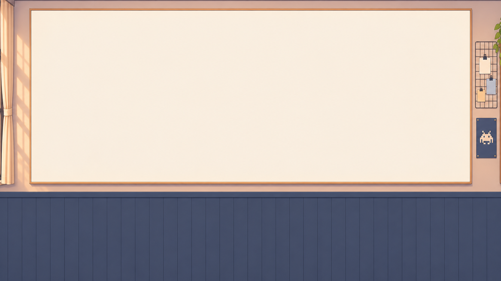
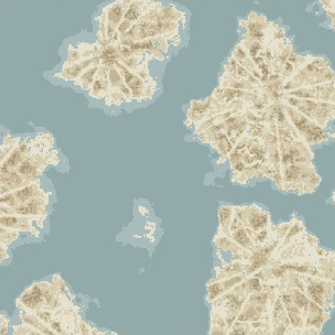

回顾
2025.11 → 2026.10
无尽之海
北方艾尔大陆
中心 (0, −5000) · 半径 2500 · 雪原、冰刺、冻河
东方荒野
中心 (6000, 2000) · 半径 1500 · 丛林
出生点平原
中心 (0, 0) · 半径 1000 · 平原

先生成世界，
再顺着原本的山海安排国家
2025 年 12 月 · 第一次转向
据 2025-11-21 提交 6d3560e4 · FixedBiomeSource.java 重绘 · 坐标单位为区块